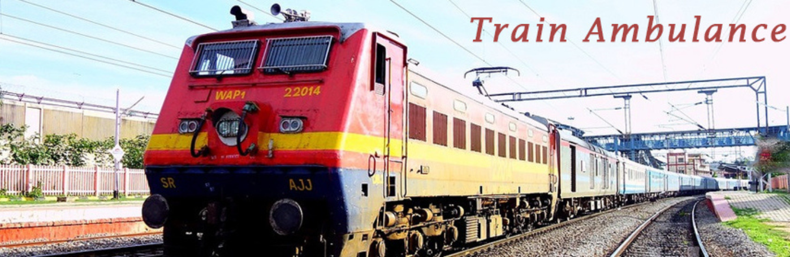

If you are looking for a reliable train ambulance service in Delhi to transfer a patient to Patna, Mumbai, Kolkata, Vellore, Bangalore or any city across India — you have come to the right place. Save Life Care (Hope4Save Life Pvt Ltd) provides fully ICU-equipped train ambulance services in Delhi, operating 24 hours a day, 7 days a week. From the moment you call us, our team handles everything — railway booking, ICU preparation, doctor escort, and safe delivery at the destination hospital.
We operate from all major Delhi railway stations including New Delhi Railway Station, Hazrat Nizamuddin, Anand Vihar Terminal and Delhi Sarai Rohilla. Our Delhi NCR office is located at Sector 110, Noida — just minutes away from major hospitals across Noida, Greater Noida, and East Delhi. Call us now at +91-8083309381 for an immediate response.
Our train ambulance in Delhi service costs up to 60% less than an air ambulance — making professional, ICU-level medical transport accessible to every family. Whether your patient is recovering from surgery, managing a cardiac condition, dealing with a neurological case, or requires palliative transport — we have the right solution for you.
Hundreds of families across Delhi NCR have trusted us to move their most critical patients safely. Here is what sets our train ambulance service apart from others:
A train ambulance is a specially arranged railway berth — typically in a 1st or 2nd AC compartment — that is converted into a mobile ICU for the duration of a patient's journey. It is equipped with medical equipment, staffed by a qualified doctor and paramedic, and coordinated with Indian Railways for priority boarding and smooth transit.
Unlike a road ambulance that is limited by traffic and distance, a train ambulance in Delhi is the ideal solution for long-distance patient transfers of 500 kilometres or more. It is more comfortable than a road journey, more affordable than an air ambulance, and provides consistent ICU-level monitoring throughout.
Train ambulances are best suited for patients who are medically stable but require continuous monitoring, oxygen support, or specialist care during transit. These include post-surgical patients, stable cardiac cases, neurological conditions, cancer patients in palliative care, and orthopaedic cases.
We have built our process to be as simple and stress-free as possible for families dealing with a medical emergency:
Every train ambulance service in Delhi that we operate is equipped based on the individual patient's medical requirements. Our standard ICU kit includes:
Our rail ambulance service in Delhi covers all major departure stations. Our ground ambulance team coordinates pickup from any hospital in Delhi, Noida, Gurgaon, or Greater Noida and transfers the patient to the most suitable station for your specific route::
Not sure which station is best for your route? Call us at +91-8083309381 — our team will advise you based on the fastest available train for your destination.
Save Life Care handles train ambulance bookings from Delhi to every major city in India. These are our most requested routes:
This is our most frequent route. Patients from AIIMS Delhi, Safdarjung Hospital, and Apollo Indraprastha are regularly transferred to AIIMS Patna, Paras HMRI, and Ruban Memorial Hospital. Journey time is 12 to 18 hours on the Rajdhani Express. Estimated cost: ₹45,000 to ₹90,000.
We regularly transfer patients from Delhi to SSKM Hospital, Apollo Gleneagles, and Fortis Anandapur in Kolkata. Journey time is 17 to 22 hours. Estimated cost: ₹60,000 to ₹1,10,000.
Mumbai-bound transfers serve patients heading to Kokilaben Dhirubhai Ambani Hospital, Tata Memorial, and Lilavati. Journey time is 16 to 24 hours. Estimated cost: ₹85,000 to ₹1,20,000.
CMC Vellore is one of the most sought-after medical destinations in India, and we arrange multiple Delhi to Vellore transfers monthly. The total travel duration is approximately between 28 and 36 hours. Estimated cost: ₹80,000 to ₹1,10,000!
Transfers to Manipal Hospital, Narayana Health, and Fortis Bangalore. Patients usually reach the destination within 28 to 36 hours. Estimated cost: ₹80,000 to ₹1,10,000.Train Ambulance Delhi to Guwahati
Serving patients heading to Gauhati Medical College, Apollo Guwahati, and GNRC. Journey time is 28 to 36 hours. Estimated cost: ₹85,000 to ₹1,10,000.We cover all Indian cities. If your destination is not listed, call us and we will arrange it.
One of the most common questions families ask is: "One question many families have is about the cost of hiring a train ambulance from Delhi." We believe in full transparency. The table below gives a realistic cost estimate by route. Your final quote is confirmed after our medical assessment call — there are no hidden charges.
| Route from Delhi | Distance | Travel Time | Estimated Cost |
|---|---|---|---|
| Delhi to Patna | ~1,000 km | 12 – 18 hrs | ₹45,000 – ₹90,000 |
| Delhi to Kolkata | ~1,500 km | 17 – 22 hrs | ₹60,000 – ₹1,10,000 |
| Delhi to Mumbai | ~1,400 km | 16 – 24 hrs | ₹85,000 – ₹1,20,000 |
| Delhi to Vellore / Chennai | ~2,200 km | 28 – 36 hrs | ₹80,000 – ₹1,10,000 |
| Delhi to Bangalore | ~2,150 km | 34 – 40 hrs | ₹80,000 – ₹1,10,000 |
| Delhi to Guwahati | ~1,900 km | 28 – 36 hrs | ₹85,000 – ₹1,10,000 |
| Delhi to Hyderabad | ~1,500 km | 24 – 30 hrs | ₹75,000 – ₹1,20,000 |
| Delhi to Ranchi | ~1,200 km | 16 – 20 hrs | ₹55,000 – ₹90,000 |
Our train ambulance in Delhi is designed for patients who require medical supervision during long-distance travel but are stable enough to travel by train. We regularly serve:
If the patient is highly unstable, deteriorating rapidly, on high-dependency ventilation, or if time is critical — an air ambulance may be the better choice. Call us at +91-8083309381, and our doctor will give you an honest, free assessment within minutes. We will always recommend what is right for the patient — even if that means referring you to air transport.
Families in Delhi often face this exact decision. Here is a clear, honest comparison:
In December 2023, Ms. Chandrawati Singh, 65, was admitted to Dharamshila Narayana Superspeciality Hospital in Noida following treatment for Carcinoma of the Buccal Mucosa (pT4aN3b) — a severe cancer that had spread to her lungs, liver, adrenal glands, bones, and muscles. After surgery, chemotherapy, and radiation, her family wanted to bring her home to Patna where she could continue palliative care closer to family.
Her condition was fragile. She had intolerances to several medications and complications including digestive issues. Her family contacted Save Life Care at 9 PM. By 10 PM, our doctor had reviewed her case with the oncology team at Narayana. By the following morning, her berth on a high-speed express was confirmed and our ICU team was at the hospital.
Our EMT Niranjan Kumar oversaw the entire transfer — stabilising Ms. Chandrawati before departure, managing the road ambulance to Hazrat Nizamuddin station, boarding the train with all equipment, and monitoring her vitals throughout the 14-hour journey to Patna. She arrived safely and was handed to the receiving hospital team within minutes of arrival.
Her daughter later shared: "We were terrified. We did not know if she could survive the journey. The Save Life team treated her with complete dignity and professionalism. They kept us informed every hour. We cannot thank them enough."
Our train ambulance service in Delhi team has coordinated patient transfers from virtually every major hospital in Delhi and NCR, including:
Patients from Gurgaon hospitals including Medanta Medicity, Artemis, and Fortis Gurgaon are also served by our team. Our Noida office ensures rapid response to any hospital in Delhi NCR.
Costs range from ₹45,000 for short routes like Delhi to Patna up to ₹90,000 for longer routes like Delhi to Chennai or Vellore. The final cost depends on the destination, medical equipment required, and the train used. Call us at +91-8083309381 for a confirmed quote with no hidden charges.
We confirm bookings within 12 to 24 hours of your initial call. Our team handles all IRCTC documentation, railway coordination, and medical preparation. For urgent cases, we do everything possible to expedite.
We operate from New Delhi Railway Station, Hazrat Nizamuddin, Anand Vihar Terminal, Delhi Sarai Rohilla, and Delhi Cantt. We arrange road ambulance transport from any hospital in Delhi, Noida, Gurgaon, or Greater Noida to the most suitable departure station for your route.
Yes, always. A qualified ICU doctor and certified paramedic accompany the patient from hospital pickup in Delhi all the way to the destination hospital handover. There is no point in the journey where the patient is left without medical supervision.
Train ambulances are suitable for patients who are stable but require ICU-level care and monitoring during travel. If a patient is highly unstable, on high-dependency ventilation, or deteriorating, we recommend an air ambulance. Call us for a free medical assessment — we will always give you an honest recommendation.
Bed-to-bed means we manage the entire journey with no gaps in care. A road ambulance picks the patient up from their hospital bed in Delhi. Our team accompanies them for the entire train journey. A ground ambulance at the destination transfers the patient directly to the receiving hospital bed. You never need to arrange any part of the journey yourself.
Yes — significantly. A train ambulance from Delhi typically costs 60% to 80% less than an air ambulance for the same route. For stable patients who can travel 12 to 40 hours, the train ambulance delivers the same ICU-level care at a fraction of the cost
Yes. Our Delhi NCR office at Sector 110, Noida serves patients from across the NCR including Noida, Greater Noida, Gurgaon, Faridabad, and Ghaziabad. We arrange pickup from any NCR hospital and coordinate transfer to the appropriate Delhi departure station.
299 A, Sharmik Kunj, Sector 110, Noida – 201304, Uttar Pradesh
4C, 4th Floor, Suraj Trade Centre, Colony More, Kankarbagh, Patna – 800001, Bihar
Whether you are at AIIMS Delhi, Apollo, Safdarjung, Max, or any hospital in Noida or Gurgaon — one call connects you to our Delhi NCR team. We respond within 30 minutes, assess your patient free of charge, and confirm your booking within 12 to 24 hours.
Call now: +91-8083309381 • Available 24 hours, 7 days a week • Hope4Save Life Pvt Ltd